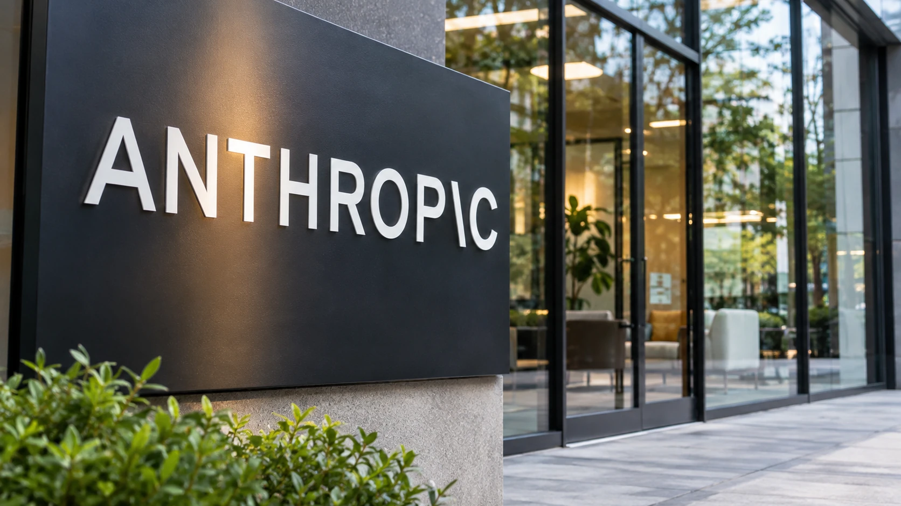

Anthropic Withdraws Preliminary IPO Pricing Details Showing Up to $69.3 Billion
Terms briefly circulated to banks set a $70 to $80 range for about 867 million shares and a $26 billion placement with chip and cloud partners, but the company said the pricing was inaccurate and will update its filing.

Dek: Terms briefly circulated to banks set a $70 to $80 range for about 867 million shares and a $26 billion placement with chip and cloud partners, but the company said the pricing was inaccurate and will update its filing.
Anthropic briefly circulated pricing details for its initial public offering to banks on Monday, November 9, and then withdrew them, according to Reuters, which reviewed the emails. The first document showed plans to sell about 867 million shares at $70 to $80 each, which at the top of the range would raise $69.3 billion. Late Monday, the company sent a follow-up email saying the pricing details were "inaccurate" and that it would update the filing later, Reuters reported. The email did not say what was wrong, Reuters could not determine it, and Anthropic declined to comment.
What the withdrawn document said
According to Reuters, the document listed 866.7 million Class A shares, including a secondary component. Anthropic would sell about 843.3 million and existing shareholders about 23.3 million. A separate section described a $26 billion private placement of Class N common stock at the IPO price. Alphabet, Nvidia, AMD, Broadcom, Micron, Microsoft and TSMC had agreed to take part, and the placement would close right after the offering, according to the same report and Techzine's account of it.
Neither report names the exchange or the ticker symbol, and neither identifies which figures were incorrect. Because the company has not said what changed, the numbers above should be treated as preliminary and unconfirmed. They are not a final offering price.
Valuation expectations
Investors had earlier discussed a valuation of up to $2 trillion, according to Reuters, but expectations have since fallen, with $1.5 trillion viewed as the high end. Those are investor discussions reported earlier by Reuters and not figures the company has published.
Financial backdrop
An earlier updated registration filing reported nearly $17 billion in third-quarter revenue, although the pace of quarterly revenue growth slowed, according to separate reporting on the document. Our earlier analysis of the filing reported third-quarter revenue of about $16.96 billion, up from $11.56 billion in the previous quarter, and about $895.4 billion of contracted computing commitments, of which $69.8 billion falls due within 12 months, as covered in our compute commitments report. Heavy reported losses accompany that growth.
Why the strategic investors matter
The reported prospective private-placement investors overlap with Anthropic's suppliers and partners; the placement terms remain unconfirmed following the retraction. Google's custom chips are central to its capacity, as covered in our report on Google's new TPUs, and Nvidia, AMD and Broadcom supply chips and networking, while Microsoft and TSMC sit elsewhere in the supply chain. If such a placement went ahead, those companies would hold equity in a customer, which is a pattern regulators and investors often examine because it can tie supplier revenue to the buyer's fundraising. The reports reviewed do not say that any such concern has been raised here, and the placement itself has not been confirmed.
Timing
Anthropic was expected to launch its roadshow on Tuesday, with pricing expected the following week, according to Reuters. Our earlier AI week-ahead preview noted that the roadshow timing had not been confirmed by the company, and neither the Reuters report nor the follow-up confirms it. Whether the retraction delays the schedule is unknown.
Market context
The reports arrive as AI-linked shares recover from last week's selloff. Chip stocks rallied strongly on Monday, with the Philadelphia Semiconductor Index up about 6.9% according to Saxo, while Nvidia fell, as covered in our Nvidia report. Companies preparing large offerings are sensitive to such swings in sentiment, though no source links the retraction to market conditions.
What the evidence supports
The evidence supports a narrow conclusion. A document with specific terms did circulate and was withdrawn, according to two reports that trace back to Reuters. The terms themselves are disputed by the company, so they cannot be used to calculate a valuation or the size of the final raise. Both outlets rely on the same underlying reporting and should not be counted as independent confirmation.
What to watch
The first marker is an updated registration statement from Anthropic showing the corrected price range and share count. The second is confirmation of the roadshow date and the exchange. The third is whether the $26 billion placement stays in the final terms. The fourth is the valuation range that emerges from investor meetings.
Limits of the reporting
The account of the withdrawn pricing terms relies on Reuters reporting; no corrected terms had been verified at the time of writing. The separately reported filing figures are background, not confirmation of the withdrawn IPO terms. Anthropic declined to comment, so no company explanation is available. Valuation figures come from earlier Reuters reporting on investor discussions. This article is not investment advice.
Sources and documentation
- Reuters, November 10, 2026 · Source
- Techzine Global, "Anthropic withdraws IPO filing after it was circulated," November 10, 2026
- Euronext, "Stocks climb as oil prices dip heading into US CPI print," November 10, 2026
- Saxo Bank, "Morning Brew, November 10, 2026," November 10, 2026
- Anthropic registration filings (primary-source figures should be rechecked if filing terms are updated before publication)